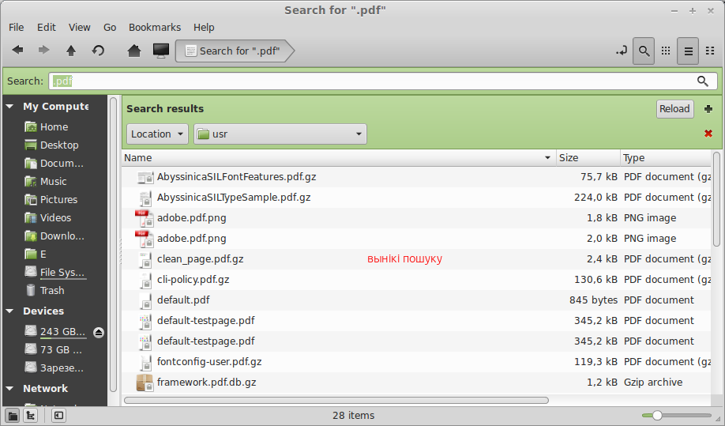
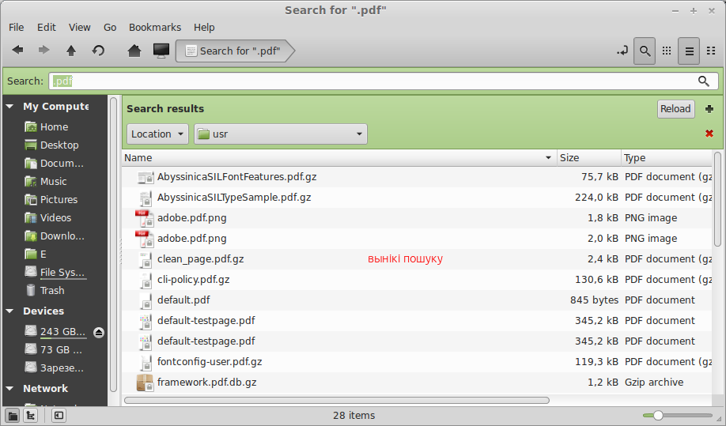
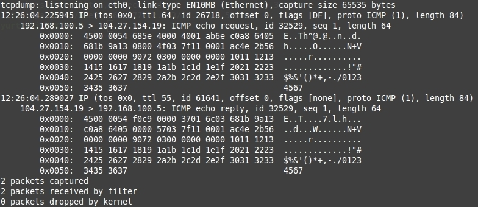

50 UNIX / Linux Sysadmin Tutorials
50 Most Frequently Used UNIX / Linux Commands (With Examples)
How to Setup Samba as Primary Domain Controller in Linux
The Linux Documentation Project
The 5-Minute Essential Shell Tutorial
** My top 15 linux commands ** that everyone should master!
How to close a program that has frozen.
Linux Terminal Command Reference
Basics of Linux system administration: Working at the console
Better Way to Hide File / Folder in Nautilus (Ubuntu / Linux)
Параўнаньне дыстрыбутываў
Увогуле дыстрыбутываў Linux незьлічонае мноства, адны зь якіх зьяўляюцца спадкаемцамі іншых. Прывядзем тут параўнаньне адносна папулярных і істотных зь іх (у парадку зьмяншэньня папулярнасьці (06'2015) зьлева направа):
| Парамэтар \ Сыстэма | Mint | Debian | Ubuntu | Fedora | openSUSE | CentOS |
|---|---|---|---|---|---|---|
| Загрузак штодня | 2950 | 1700 | 1500 | 1460 | 1110 | 940 |
| Спадкаемца | Ubuntu | - | Debian | - | Slackware | Fedora / RedHat |
| Графічны інтэрфэйс | Cinnamon (GNOME) | GNOME | Unity (GNOME) | GNOME | KDE | GNOME |
| Кіраваньне пакетамі | dpkg (APT) | dpkg (APT) | dpkg (APT) | RPM (YUM) | RPM (ZYpp) | RPM (YUM) |
| Частотнасьць рэлізаў, 1 раз на... |
6 месяцаў | 2 гады | 6 месяцаў | 6 месяцаў | 8 месяцаў | 6 месяцаў |
| Асаблівасьці | больш прыязны да карыстальніка, найбольш выкарыстоўваемыя рэчы ўжо перадустаноўлены | стабільнасьць і кансэрватыўнасьць, не заўсёды самыя сучасныя тэхналёгіі | больш прыязны да карыстальніка, але часта зьмяняюцца прынцыповыя рэчы | інавацыйны, высокая бясьпека, больш для карпаратыўнага карыстаньня | добрая дакумэнтацыя і адміністратыўная прылада, цяжкі і марудны UI | бясплатная вэрсія карпаратыўнага ўзроўню |
Каманды радок
Выканаць нейкі скрыпт у цяперашнім кантэксьце (тэрмінальным акне) можна камандай source:
$ source .bash_profile
Стварыць скарот нейкай каманды можна пры дапамозе alias:
$ alias pd="pwd"
Перакіраваньні ўводу і вываду
> перанакіроўвае вывад каманды ў файл:
$ cat lakes.txt | sort > sorted-lakes.txt
>> тое ж самае, што і папярэдняе, пры гэтым не перазапісвае зьмесьціва файла але дадае ў яго.
< бярэ зьмесьціва файла ў якасьці ўводу для каманды:
$ cat < lakes.txt
| перадае вывад адной каманды ў якасьці ўводу іншай:
$ cat volcanoes.txt | wc
Тут вынік каманды cat volcanoes.txt будзе пераданы ў якасьці ўводу камандзе wc.
Асяродак
Каб вывесьці сьпіс усіх зьменных асяродка, можна скарыстацца камандай printenv.
Каб вывесьці значэньне толькі пэўнай зьменнай, трэба скарыстацца камандай echo $<Env_Var_Name>, напрыклад:
$ echo $PATH
Пры жаданьні пашырыць існую ці стварыць новую зьменную асяродка трэба скарыстацца камандай:
$ export PATH=$PATH:/path/to/dir
якая дадасьць значэньне /path/to/dir у канец існага значэньня зьменнай PATH.
Калі выканаць каманду ў тэрмінальным акне, то гэтая зьмена будзе мець сілу толькі ў гэтым акне. Каб яна мела сілу на працягу ўсёй сэсіі працы пэўнага карыстальніка, трэба дадаць гэтую каманду ў файл .bash_profile (калі актуальна толькі для bash-сэсій, альбо ў .profile для ўсяго астатняга) хатняй тэчкі гэтага карыстальніка. Каб гэтая зьмена была актуальна для сэсій усіх карыстальнікаў, каманду трэба дадаць у файл /etc/profile.
Праграмы
Рэгістрацыя праграмы з архіву
Калі праграма пастаўляецца ня ў выглядзе пакету, але ў выглядзе архіву, які трэба распакаваць і запусьціць праграму як ёсьць, тады трэба яе прадставіць сыстэме, інакш апошняя ня будзе ведаць пра яе існаваньне:
- Загружаем архіў і распакоўваем яго ў тэчку па жаданьні. Напрыклад, загружаем Eclipse і распакоўваем у
/usr/lib - Ствараем выконваемы файл:
Адчыняем файл пры дапамозе тэкставага рэдактару і ўстаўляем туды наступны скрыпт:$ sudo touch /usr/bin/eclipse $ sudo chmod 755 /usr/bin/eclipse
і захоўваем.#!/bin/sh export ECLIPSE_HOME="/usr/lib/eclipse" $ECLIPSE_HOME/eclipse $* - Ствараем пункт мэню для Gnome. Для гэтага ствараем файл
eclipse.desktopу тэчцы/usr/share/applications/, ўстаўляем у яго наступны тэкст:
і захоўваем.[Desktop Entry] Encoding=UTF-8 Name=Eclipse Comment=Eclipse IDE Exec=eclipse Icon=/usr/lib/eclipse/icon.xpm Terminal=false Type=Application Categories=GNOME;Application;Development; StartupNotify=true
Усё, цяпер праграму можна запускаць праз мэню.
update-alternatives
update-alternatives – гэта цэлая падсыстэма, якая абслугоўвае сымбалічныя спасылкі, якія вызначаюць каманды, файлы і дырэкторыі, якія выкарыстоўваюцца па-змоўчваньні.
Адлюстраваць усе альтэрнатыўныя шляхі пэўнай спасылкі можна наступным чынам:
$ update-alternatives --list java
/usr/lib/jvm/java-1.7.0_79-oraclejdk-x64/jre/bin/java
/usr/lib/jvm/java-1.8.0_51-oraclejdk-x64/jre/bin/java
/usr/lib/jvm/java-7-openjdk-amd64/jre/bin/java
Адлюстраваць усе альтэрнатывы для пэўнай спасылкі ўлучна з іх прыярытэтамі, а таксама з пазначэньнем якая зь іх зьяўляецца актыўнай на дадзены момант можна наступным чынам:
$ update-alternatives --display java
java - manual mode
link currently points to /usr/lib/jvm/java-1.7.0_79-oraclejdk-x64/jre/bin/java
/usr/lib/jvm/java-1.7.0_79-oraclejdk-x64/jre/bin/java - priority 0
/usr/lib/jvm/java-1.8.0_51-oraclejdk-x64/jre/bin/java - priority 0
/usr/lib/jvm/java-7-openjdk-amd64/jre/bin/java - priority 1071
slave java.1.gz: /usr/lib/jvm/java-7-openjdk-amd64/jre/man/man1/java.1.gz
Current 'best' version is '/usr/lib/jvm/java-7-openjdk-amd64/jre/bin/java'.
Дадаць альтэрнатыўны шлях да пэўнай спасылкі можна наступным чынам:
$ update-alternatives --install java /usr/lib/jvm/java-1.7.0_79-oraclejdk-x64/jre/bin/java
Выдаліць альтэрнатыву можна наступным чынам:
$ update-alternatives --remove java /usr/lib/jvm/java-1.7.0_79-oraclejdk-x64/jre/bin/java
Альбо выдаліць усе альтэрнатывы, то бок увогуле спасылку:
$ update-alternatives --remove-all java
Выбраць актыўную на дадзены момант альтэрнатыву можна наступным чынам:
$ update-alternatives --config java
з наступным вынікам:

Пакеты
Праглядзець сьпіс усталяваных сыстэмных пакетаў:
$ dpkg --get-selections | grep node
node-less install
nodejs install
Усталяваць новы пакет:
$ sudo apt-get install npm
Файлавая сыстэма
Пошук файлаў і тэчак
How to Find Files and Folders in Linux Using the Command Line
Finding all files containing a text string in linux
A Unix/Linux “find” Command Tutorial
Праз графічны інтэрфэйс
Па-першае, шукаць можна праз стандартны файлавы мэнэджэр:

 

Перавагай гэтага мэтаду зьяўляецца яго прастата і візуалізацыя, нязручнасьцю – нягнуткасьць і тое, што вынікі пошуку адлюстроўваюцца ў плоскім выглядзе, без герархіі, не зразумела дзе дакладна ўнутры цяперашняй тэчцы знаходзіцца той ці іншы файл:

Праз камандны радок
Больш магутны сродак пошуку – сыстэмная каманда find:
$ find .

find -type l – пералічыць усе сымлінкі (symlinks) цяперашняй тэчцы і ўва ўсіх укладзеных у яе.
Інфармацыя аб файлах
Каманда file <FILE_NAME> выводзіць інфармацыю пра тое, што зь сябе ўяўляе пэўны файл:
$ file branching.svg
branching.svg: SVG Scalable Vector Graphics image
$ file artifacts.xml
artifacts.xml: XML document text
$ file java
java: symbolic link to '/etc/alternatives/java'
$ file profile
profile: ASCII text
Лінкі на дэсктопе
Пры жаданьні стварыць на дэсктопе лінк да файла ці тэчкі, можна скарыстацца камандай лінкаваньня ln -s:
$ ln -s
дзе ў якасьці <TARGET> пазначаецца шлях да файла/тэчкі, а ў якасьці <LINK> – элемэнт дэсктопу (інакш кажучы іконка), які будзе злучаны з target-файлам/тэчкай. Напрыклад:
$ ln -s /usr/bin/eclipse /home/my_home/Desktop/eclipse
У выніку на дэсктопе зьявіцца іконка запуску экліпсы.
Зьмесьціва тэчак
ls -Fal – пералічыць увесь зьмест цяперашняй тэчцы, у тым ліку пакажа куды спасылаюцца сымлінкі.
Сартаваньне
Правілы змоўчнага сартаваньня тэчак ігнаруюць адмысловыя сымбалі, якія некаторыя Windows-карыстальнікі выкарыстоўваюць для асобнага групаваньня пэўных тэчак, напрыклад знак падкрэсьліваньня. Каб праверыць які мэтад сартаваньня выкарыстоўвае сыстэма, трэба ў кансолі запусьціць каманду locale, якая выдасьць падобны вынік:
LANG=en_US.UTF-8
LANGUAGE=
LC_CTYPE="en_US.UTF-8"
LC_NUMERIC=be_BY.UTF-8
LC_TIME=be_BY.UTF-8
LC_COLLATE="en_US.UTF-8"
LC_MONETARY=be_BY.UTF-8
LC_MESSAGES="en_US.UTF-8"
LC_PAPER=be_BY.UTF-8
LC_NAME=be_BY.UTF-8
LC_ADDRESS=be_BY.UTF-8
LC_TELEPHONE=be_BY.UTF-8
LC_MEASUREMENT=be_BY.UTF-8
LC_IDENTIFICATION=be_BY.UTF-8
LC_ALL=
Значэньне атрыбуту LC_COLLATE можна зьмяніць на C, тады мэтад сартаваньня зьменіцца і адмысловыя сымбалі ўжо будуць улічвацца, хаця і не цалкам так жа, як у Windows. Робіцца гэта пры дапамозе наступнай каманды:
$ update-locale LC_COLLATE=C
Зьмесьціва файлаў
sort – сартуе радкі файлу ў альфабэтным парадку.
uniq – выдаляе дубліруючыя радкі і выводзіць толькі ўнікальныя.
grep – шукае ў пазначаных файлах супадзеньні па рэгулярных выразах:
$ grep Mount mountains.txt
альбо без уліку рэгістру:
$ grep -i Mount mountains.txt
Наступны варыянт шукае ўва ўсіх файлах пазначанай тэчкі (парамэтар R) і выводзіць толькі імёны файлаў (l), у якіх знайшлося супадзеньне:
$ grep -Rl Arctic /home/ccuser/workspace/geography
sed – "знайсьці і замяніць":
$ sed -i 's/snow/rain/g' forests.txt
Знойдзе ўсе словы snow у файле forests.txt і заменіць (s) на слова rain, прычым ня толькі першае трапляньне snow у радку, але ўсе трапляньні (g), пры тым і без уліку рэгістру (-i).
Сьцісканьне
Сьціснуць файл/тэчку:
$ tar -cvzf archive.tar.gz /path/to/file/or/directory
Распакаваць архіў ў цяперашнюю тэчку без выдаленьня архіву:
$ tar -xvzf archive.tar.gz
Сетка й злучэньні
Initial Server Setup with Ubuntu 16.04
Парамэтры для сеціўных масак
| Маска дзес. | Адрасоў | Хастоў | Маска клясічная |
|---|---|---|---|
| /30 | 4 | 2 | 255.255.255.252 |
| /29 | 8 | 6 | 255.255.255.248 |
| /28 | 16 | 14 | 255.255.255.240 |
| /27 | 32 | 30 | 255.255.255.224 |
| /26 | 64 | 62 | 255.255.255.192 |
| /25 | 128 | 126 | 255.255.255.128 |
| /24 | 256 | 254 | 255.255.255.0 |
| /23 | 512 | 510 | 255.255.254.0 |
| /22 | 1024 | 1022 | 255.255.252.0 |
| /21 | 2048 | 2046 | 255.255.248.0 |
| /20 | 4096 | 4094 | 255.255.240.0 |
| /19 | 8192 | 8190 | 255.255.224.0 |
| /18 | 16384 | 16382 | 255.255.192.0 |
| /17 | 32768 | 32766 | 255.255.128.0 |
| /16 | 65536 | 65534 | 255.255.0.0 |
Аналіз трафіку
Для аналізу трафіку выкарыстоўваецца каманда tcpdump.
Магчымыя опцыі:
-n– не вызначае імёны хастоў (будуць выводзіцца IP-адрасы);-nn– не вызначае імёны хастоў альбо партоў;-q– выводзіць менш інфармацыі;-v,-vv,-vvv– выводзіць больш пакетнай інфармацыі;-cX– атрымлівае X пакетаў і спыняе працу;-s X– вызначае памер у байтах таго фрагмэнту пакету, які будзе «захоплены» (captured) праграмай (па змоўчваньні 96, каб прыняць увесь зьмест трэба пазначыць-s 0);-i any– каманда будзе сачыць за ўсімі існуючымі сеціўнымі інтэрфэйсамі;-i eth0– каманда будзе сачыць толькі за пазначаным сеціўным інтэрфэйсам;-S– выводзяцца абсалютныя sequence-значэньні;-e– дадаткова выводзіцца і ethernet-загаловак;-X– зьмесьціва пакета будзе выводзіцца як у шаснаццацірычным, гэтак і ў ASCII-фармаце;-XX– тое ж што і-X, але дадаткова ужываецца і да ethernet-загалоўку;icmp– сочыць толькі за ICMP-пакетамі (яшчэ магчымыя значэньніtcpiudp);-D– выводзіць сьпіс даступных сеціўных інтэрфэйсаў;-w CAPTURE_FILE– перанакіроўвае вывад уCAPTURE_FILE-файл;
Прывядзем некаторыя прыклады:
- Базавая інфармацыя пра трафік без асаблівых наладаў:
$ tcpdump -nS - Больш разгорнутая інфармацыя пра трафік без вызначэньня імёнаў і партоў:
$ tcpdump -nnvvS - Больш разгорнутая інфармацыя пра трафік без вызначэньня імёнаў і партоў:
$ tcpdump -nnvvS - Дададзім
-Xдля дадатковага вываду зьместу пакетаў:$ tcpdump -nnvvXS - Павялічваем памер вывадзімага зьместу пакетаў да 1514 байтаў:
$ tcpdump -nnvvXSs 1514 - Адсочваем дакладна 2 пакета пратаколу ICMP (пара ping- і pong-пакетаў каманды
ping):
вынік будзе прыкладна наступны: $ tcpdump -nnvvXSs 0 -c2 icmp
Акрамя прыведзеных вышэй опцыяў можна задаваць дадатковыя парамэтры (host, src, dst, net, port, src port, dst port), а таксама камбінаваць іх у лягічныя выразы праз or і and:
$ tcpdump host 1.2.3.4
$ tcpdump src 2.3.4.5
$ tcpdump dst 3.4.5.6
$ tcpdump net 1.2.3.0/24
$ tcpdump port 3389
$ tcpdump src port 1025
$ tcpdump dst port 389
$ tcpdump src port 1025 or src port 1026
$ tcpdump udp and src port 53
Таксама можна задаваць не адзін порт, але дыяпазон:
$ tcpdump portrange 1025-1026
І абмяжоўваць памер адсочваемых пакетаў:
$ tcpdump less 32
$ tcpdump greater 128
SSH
Генэрацыя ключоў
$ ssh-keygen -t rsa -b 4096 -C "your_email@example.com"
Generating public/private rsa key pair.
Enter file in which to save the key (/home/you/.ssh/id_rsa): /home/you/.ssh/your_rsa
Enter passphrase (empty for no passphrase):
Enter same passphrase again:
Your identification has been saved in /home/you/.ssh/your_rsa.
Your public key has been saved in /home/you/.ssh/your_rsa.pub.
The key fingerprint is:
1e:b2:dd:ee:9b:61:ae:34:78:04:d1:26:2b:ad:24:24 your_email@example.com
Шэраг магчымых опцыяў:
-t– тып ключа. Магчымыя значэньніrsa1для пратаколу вэрсіі 1 іrsa/dsaдля пратаколу вэрсіі 2.-b– памер ключа ў байтах. Памер rsa-ключоў можа быць ад 768, змоўчным значэньнем зьяўляецца 2048, што лічыцца цалкам дастатковым. Памер dsa-ключоў павінен быць дакладна 1024.-C– камэнтар (звычайна email).-f– імя файлу, куды будзе зьмешчаны ключ.
Fingerprint ключа
Каб пабачыць fingerprint ключа, можна скарыстацца камандамі:
- fingerprint публічнага ключа цяперашняга карыстальніка:
$ ssh-add -l - fingerprint адвольнага ключа з пазначэньнем шляху да гэтага ключа:
$ ssh-keygen -lf ~/.ssh/id_rsa.pub
Тунэль
Каб зрабіць SSH-тунэль, можна скарыстацца камандай:
$ ssh -N -L <LOCAL_PORT>:<REMOTE_HOST>:<REMOTE_PORT> <USER_NAME>@<SSH_SERVER>
Тлумачэньне:
-N– вызначае, што злучэньне будзе не інтэрактыўным (SSH-кансоль адлеглага сэрвэру не будзе адкрытая).-L– вызначае, што злучэньне з лякальным партом будзе перанакіроўвацца на адлеглы порт.<LOCAL_PORT>– нумар лякальнага парта, павінен не перакрывацца з іншымі адкрытымі партамі і быць большым за 1024.<REMOTE_HOST>– імя ці IP-адрас адлеглага хаста, зь якім мы насамрэч жадаем злучыцца.<REMOTE_PORT>– нумар парта адлеглага хаста, зь якім мы насамрэч жадаем злучыцца.<SSH_SERVER>– імя ці IP-адрас пасярэдняга SSH-сэрвэра, які будзе ажыцьцяўляць ролю тунэля.<USER_NAME>– імя карыстальніка, які зарэгістраваны на SSH-сэрвэры.
Прыклад:
$ ssh -N -L 9022:10.1.22.16:22 yurtsevich@192.168.117.160
Калі такое злучэньне робіцца на рэгулярнай аснове, можна яго вынесьці ў наладкі, прысвоіць імя і злучацца па імені. Дадаем наступнае ў файл ~/.ssh/config:
Host tunnel
HostName 192.168.117.160
IdentityFile ~/.ssh/id_rsa
LocalForward 9022 10.1.22.16:22
User yurtsevich
Тады злучэньне можна будзе рабіць наступным скарочаным чынам:
$ ssh -N tunnel
А калі дадаць аргумэнт -f тады кансоль не заліпне пасьля злучэньня:
$ ssh -N -f tunnel
Пасьля гэтага можна зьвяртацца да лякальнага парта, быццам гэта порт адлеглага сэрвэру:
$ git clone ssh://git@localhost:9022/project/repo
SCP
Сьцягнуць файл foobar.txt з адлеглага хаста remotehost.edu у лякальную тэчку /some/local/directory:
$ scp your_username@remotehost.edu:foobar.txt /some/local/directory
Адправіць файл foobar.txt з цяперашняй тэчкі на адлеглы хост remotehost.edu у яго тэчку /some/remote/directory:
$ scp foobar.txt your_username@remotehost.edu:/some/remote/directory
Адправіць файл foobar.txt з адлеглага хоста rh1.edu на іншы адлеглы хост rh2.edu:
$ scp you@rh1.edu:/some/remote/directory/foobar.txt you@rh2.edu:/some/remote/directory/
Магчымыя опцыі:
-r– рэкурсіўна пераносіць усю тэчку.-P– пазначаецца нумар парта адлеглага хаста.
rsync
Сьцягнуць файл foobar.txt з адлеглага хаста remotehost.edu у лякальную тэчку /some/local/directory з пазначэньнем альтэрнатыўнага парта (2222, у адрозьненьне ад змоўчнага 22):
$ rsync -av --partial -e "ssh -p 2222" you@remotehost.edu:foobar.txt /some/local/directory
GNU screen
Робіць проксі паміж хастом і сэсіяй адлеглага карыстальніка да гэтага хаста. Што дазваляе камандам працягваць выконвацца на хасьце нават калі сэсія адлеглага карыстальніка перарываецца. Падключэньне да screen пасьля лагіну:
$ screen -D -RR
Nginx
Прыстасаваньні
xinput
Пры дапамозе каманды xinput можна праглядаць і наладжваць прыстасаваньні ўводу.
Праглядзець сьпіс прыстасаваньняў можна наступным чынам:
$ xinput --list
⎡ Virtual core pointer id=2 [master pointer (3)]
⎜ ↳ Virtual core XTEST pointer id=4 [slave pointer (2)]
⎜ ↳ DaKai 2.4G RX id=11 [slave pointer (2)]
⎜ ↳ PS/2 Logitech Wheel Mouse id=15 [slave pointer (2)]
⎣ Virtual core keyboard id=3 [master keyboard (2)]
↳ Virtual core XTEST keyboard id=5 [slave keyboard (3)]
↳ Power Button id=6 [slave keyboard (3)]
↳ Video Bus id=7 [slave keyboard (3)]
↳ Video Bus id=8 [slave keyboard (3)]
↳ Sleep Button id=9 [slave keyboard (3)]
↳ DaKai 2.4G RX id=10 [slave keyboard (3)]
↳ USB2.0 HD UVC WebCam id=12 [slave keyboard (3)]
↳ Asus WMI hotkeys id=13 [slave keyboard (3)]
↳ AT Translated Set 2 keyboard id=14 [slave keyboard (3)]
Праглядзець сьпіс атрыбутаў пэўнага прыстасаваньня можна наступным чынам (па id прыстасаваньня):
$ xinput --list-props 11
Device 'DaKai 2.4G RX':
Device Enabled (154): 1
Coordinate Transformation Matrix (156): 1.000000, 0.000000, 0.000000,
0.000000, 1.000000, 0.000000, 0.000000, 0.000000, 1.000000
Device Accel Profile (282): 0
Device Accel Constant Deceleration (283): 2.000000
Device Accel Adaptive Deceleration (284): 2.500000
Device Accel Velocity Scaling (285): 0.500000
Device Product ID (273): 3727, 165
Device Node (274): "/dev/input/event7"
Evdev Axis Inversion (286): 0, 0
Evdev Axes Swap (288): 0
Axis Labels (289): "Rel X" (164), "Rel Y" (165),
"Rel Horiz Wheel" (280), "Rel Vert Wheel" (281)
Button Labels (290): "Button Left" (157), "Button Middle" (158),
"Button Right" (159), "Button Wheel Up" (160), "Button Wheel Down" (161),
"Button Horiz Wheel Left" (162), "Button Horiz Wheel Right" (163), "Button Side" (278),
"Button Extra" (279), "Button Unknown" (276), "Button Unknown" (276),
"Button Unknown"(276), "Button Unknown" (276)
Evdev Middle Button Emulation (291): 1
Evdev Middle Button Timeout (292): 50
Evdev Third Button Emulation (293): 0
Evdev Third Button Emulation Timeout (294): 1000
Evdev Third Button Emulation Button (295): 3
Evdev Third Button Emulation Threshold (296): 20
Evdev Wheel Emulation (297): 0
Evdev Wheel Emulation Axes (298): 0, 0, 4, 5
Evdev Wheel Emulation Inertia (299): 10
Evdev Wheel Emulation Timeout (300): 200
Evdev Wheel Emulation Button (301): 4
Evdev Drag Lock Buttons (302): 0
Аднак трэба памятаць, што спадзявацца на id ня варта, таму што сьпіс прыстасаваньняў можа зьмяніцца, а адпаведна і id. Таму тое ж самае можна зрабіць па імені прыстасаваньня.
$ xinput --list-props "DaKai 2.4G RX"
Warning: There are multiple devices matching 'DaKai 2.4G RX'.
To ensure the correct one is selected, please use the device ID, or prefix the
device name with 'pointer:' or 'keyboard:' as appropriate.
unable to find device DaKai 2.4G RX
Упс. Сыстэма паскардзілася, што прыстасаваньняў з такім імем некалькі і яна сама ня можа вызначыць які зь іх мы мелі на ўвазе, таму трэба быць больш дакладным:
$ xinput --list-props "pointer:DaKai 2.4G RX"
Device 'DaKai 2.4G RX':
Device Enabled (154): 1
...
Зьмяніць значэньне пэўнага атрыбуту прыстасаваньня, можна наступным чынам (па id прыстасаваньня і атрыбута):
$ xinput --set-prop 11 283 2.0
Альбо тое ж самае па імені прыстасаваньня і атрыбута:
$ xinput --set-prop "pointer:DaKai 2.4G RX" "Device Accel Constant Deceleration" 2.0
Сэнс некаторых атрыбутаў прыстасаваньняў навядзеньня (мыш):
- Device Accel Constant Deceleration – каэфіцыент замаруджваньня хуткасьці руху курсору пры звычайных рухах мышкай; чым вышэй значэньне, тым марудней будзе рухацца курсор пры тых жа рухах мышкай.
- Device Accel Adaptive Deceleration – каэфіцыент замаруджваньня хуткасьці руху курсору пры нязначных рухах мышкай (няма пэўнага вызначэньня, што значыць нязначныя рухі, трэба спрабаваць для кожнай сыстэмы/прыстасаваньня); чым вышэй значэньне, тым марудней будзе рухацца курсор пры тых жа рухах мышкай.
- Device Accel Velocity Scaling – для большасьці прыладаў, аптымальнае значэньне – 0.5-2.
БД
MySQL
Падключыцца да базы:
$ mysql -u USERNAME -p
Пабачыць сьпіс усіх базаў у кансолі mysql:
mysql> show databases;
Стварыць новы экзэмпляр базы:
mysql> create database DBNAME;
Надзяліць пэўнага юзэра правамі доступу да пэўнай базы:
mysql> grant all privileges on DBNAME.* to 'USER'@'localhost' identified by 'PASSWORD';
Падключыцца да пэўнай базы:
mysql> use DBNAME;
Пасьля гэтага можна выконваць SQL-запыты да гэтай базы.
Сьцягнуць дамп базы ў файл:
$ mysql -u USERNAME -p DBNAME > dump.sql
# альбо
$ mysqldump -u USERNAME -p DBNAME > dump.sql
Накаціць дамп базы з файла:
$ mysql -u USERNAME -p DBNAME < dump.sql
# альбо ў кансолі базы
mysql> source /path/to/dump.sql
Выдаліць таймстэмпы са скрыпта:
$ sed -i 's/DEFAULT CURRENT_TIMESTAMP//g' SCRIPT.sql
select name, round(1.0 * count(distinct order_id) /
count(distinct orders.delivered_to), 2) as reorder_rate
from order_items
join orders on
orders.id = order_items.order_id
group by 1
order by 2 desc;
MongoDB
"The magical marvels of MongoDB" – відэа-курс ад CodeSchool.